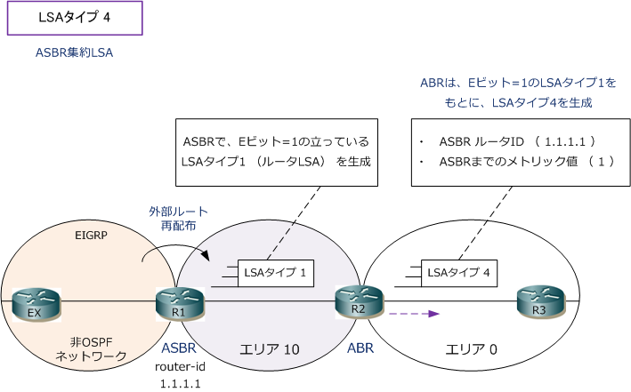
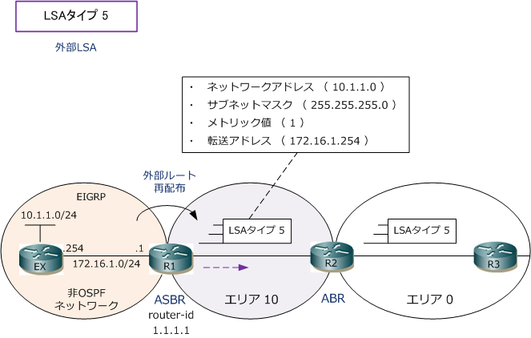
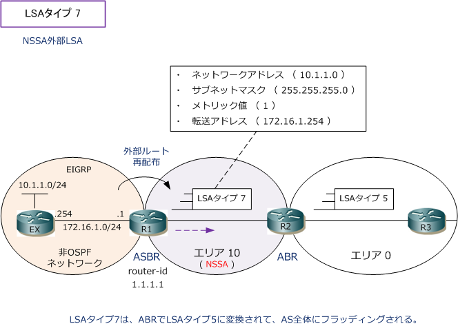

OSPF - LSA Type 4 / LSA Type 5 / LSA Type 7
OSPF - LSAタイプ 4
LSAタイプ4は、異なるエリアへフラッディングされます。LSAタイプ4はタイプ3同様にABRが生成します。 このLSAには、ASBRのルータID、ASBRに到達するまでのメトリック値が含まれています。LSAタイプ4は OSPFネットワークに非OSPFネットワークが接続されて、ASBRが保持する経路情報をOSPFネットワークに ルート再配布した場合にそのエリアに所属するABRがLSAタイプ4を生成します。

LSAタイプ4のLSAは、show ip ospf database asbr-summary コマンドで確認することができます。
OSPF - LSAタイプ 5
LSAタイプ5（ 外部LSA ）は、AS全体にフラッディングされます。LSAタイプ5は、ASBRが生成します。 LSAには非OSPFネットワークアドレス、サブネットマスク、メトリック値、転送アドレスが含まれます。 このLSAは非OSPFネットワークのルート情報を再配布したASBRが生成します。ルーティングテーブルで LSAタイプ5の経路情報は、OSPF外部ルートを示す「O E1」または「O E2」のコードが付けられています。

LSAタイプ5のLSAは、show ip ospf database externalコマンドによって確認することができます。 OSPF外部ルートを示す「O E1」と「O E2」の違いは以下の通りであり、メトリック値に影響します。 メトリックタイプは、ASBRでルート再配布の設定をする際に、どちらかを指定することができます。
| メトリックタイプ | 説明 |
|---|---|
| E1 | OSPFネットワークのコスト値が、外部ルートのコスト値に加算されていく。 |
| E2 | OSPFネットワークのコスト値が、外部ルートのコスト値に加算されない。デフォルト値 |
OSPF - LSAタイプ 7
LSAタイプ7は、NSSA（ スタブエリアにASBRが存在できる特別なエリア ）へフラッディングされます。 LSAタイプ7は、NSSAのASBRが生成します。このLSAにはLSA5と同様に非OSPFネットワークアドレス、 サブネットマスク、メトリック値、転送アドレスが含まれます。 このLSAは非OSPFネットワークのルート情報を再配布したASBRが生成します。ルーティングテーブルで LSAタイプ7の経路情報は、OSPF外部ルートを示す「O N1」または「O N2」のコードが付けられています。

LSAタイプ7のLSAは、show ip ospf database nssa-external コマンドで確認することができます。